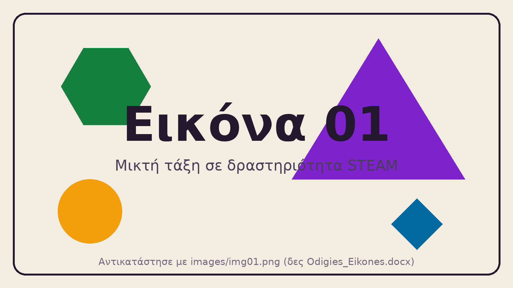

Το UDL δεν είναι ετικέτα που κολλάμε στο STEAM.
Είναι ο φακός με τον οποίο το σχεδιάζουμε, το εξετάζουμε, το ερευνούμε.
Η κεντρική ιδέα του σεμιναρίου
Πλαίσιο και ερευνητικές προοπτικές για διπλωματικές εργασίες. Πώς εντοπίζεις τι είναι πράγματι STEAM και τι πράγματι UDL, πώς συνδέονται, και πώς αυτή η σύνδεση γίνεται ερευνητικό ερώτημα στην ειδική αγωγή.
Το σεμινάριο δεν αντικαθιστά ένα μάθημα. Ανοίγει μια οπτική και σου δίνει τα εργαλεία για να αποφασίσεις αν θέλεις να κάνεις διπλωματική σε αυτό το πεδίο.
Αναγνωρίζω τα γράμματα STEAM, το επίπεδο διεπιστημονικότητας και τις αρχές του UDL σε ένα σενάριο.
Εξηγώ πώς η πολυτροπικότητα του STEAM αντιστοιχεί σε αρχές του UDL, και πού δημιουργεί εμπόδια.
Διατυπώνω ένα θέμα διπλωματικής στην ειδική αγωγή που απαντά ρητά σε τέσσερα ερωτήματα.

Το UDL δεν είναι ετικέτα που κολλάμε στο STEAM.
Είναι ο φακός με τον οποίο το σχεδιάζουμε, το εξετάζουμε, το ερευνούμε.
Τα πέντε γράμματα, ο ρόλος της τέχνης, τα επίπεδα ολοκλήρωσης, οι δεξιότητες του 21ου αιώνα.
Οι τρεις αρχές, οι εννέα κατευθυντήριες γραμμές, η διαφορά από τη διαφοροποίηση.
Πού το STEAM ανοίγει δρόμους για μαθητές με αναπηρία, και πού τους κλείνει.
Ευρωπαϊκά έργα, ελληνικές εργασίες και μελέτες, με ερωτήματα ανάλυσης.
Ένα σενάριο, δύο μαθητές, τρία βήματα: εντοπίζω, βρίσκω εμπόδια, επανασχεδιάζω.
Τα τέσσερα ερωτήματα, ενδεικτικά θέματα, ρεαλιστικοί σχεδιασμοί, και η μεθοδολογία αναλυτικά.